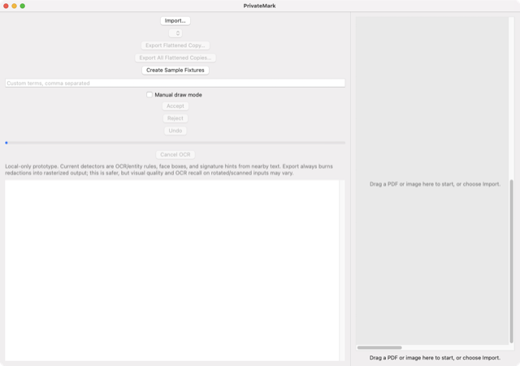

PrivateMark
PrivateMark, a native macOS desktop application for ordinary people who need to share PDFs, scans, or screenshots without exposing addresses,…
Shipped
Built in 2h 15m
2026-08-26
3,043,976 tokens · $4.18 api-equiv
Not yet monetized

The app running on macOS — captured from the packaged build.
Selection benchmarks
Scored 1–10 on eight perspectives before building. The shape is the point: the studio picks the best balance — a round polygon is a safe bet, a spike is a gamble.
score shape — rounder is safer
weakest perspective — the reason this venture is risky
| profit | revenue potential and margin — scored 7/10 |
| change | genuine improvement for the people it serves — scored 9/10 |
| effort | how little work it takes to reach a usable result — scored 6/10 |
| viability | survives real constraints, competitors and economics — scored 8/10 |
| future | durability and timing, not a passing fad — scored 9/10 |
| market | size, growth and willingness to pay — scored 8/10 |
| population | how many people it can reach — scored 9/10 |
| availability | buildable now with the resources on hand — scored 10/10 |
The opportunity
PrivateMark, a native macOS desktop application for ordinary people who need to share PDFs, scans, or screenshots without exposing addresses, account numbers, identification details, faces, signatures, or other sensitive content. The painful problem is that reliable redaction is tedious, easy to perform incorrectly, and often sends private documents to online services. The value proposition is fast, entirely local detection and human review followed by verifiably permanent redaction and export.
Objective for this build
Build the useful graphical PrivateMark macOS application and distributable DMG with swiftc alone. It must import mixed PDFs and images by picker or drag-and-drop; process multi-page and scanned input with visible progress and cancellation; use Vision OCR, PDFKit, NaturalLanguage, and pattern rules to propose names, addresses, emails, phone numbers, account identifiers, signatures, faces, and user-defined terms; overlay findings on rendered pages; provide keyboard-friendly accept, reject, draw, undo, and category controls; persist detection preferences and recent export settings; export genuinely flattened redacted PDFs or images; generate a redaction summary; and re-open exported results to verify that removed text is absent. It must handle rotated pages, failed OCR, encrypted or malformed PDFs, duplicate filenames, and partial batch failures with useful errors. Verification covers compilation, application launch, messy multi-page fixtures, manual review behavior, settings persistence, irreversible export checks, and DMG contents.
Market and user research
## 1. MARKET SIZE All figures below are **ESTIMATES based on domain knowledge and inference**, not externally verified market data. PrivateMark’s plausible initial market is Mac users who periodically send documents containing personal or client information. The strongest buyers are not everyone who owns a Mac, but people who redact often enough to distrust free online tools or resent manual workflows. Bottom-up annual buyer estimate: - **ESTIMATE: 25 million** English-speaking, actively used Macs in households and very small businesses. - **ESTIMATE: 20%**, or **5 million users**, share a sensitive PDF, scan, or screenshot at least several times per year. - **ESTIMATE: 12%** of those users experience sufficient privacy concern or repetition to seek dedicated redaction software. - Addressable active buyers: **5,000,000 × 12% = 600,000**. - **ESTIMATE: 20%** could be persuaded to pay for a polished, trusted Mac application at launch-stage pricing. - Plausible serviceable paying market: **600,000 × 20% = 120,000 buyers**. At a proposed **ESTIMATE: $39 one-time price**, that represents approximately: **120,000 × $39 = $4.68 million** in potential first-purchase revenue across the initial English-speaking consumer and solo-professional market. A realistic early outcome is much smaller: - **ESTIMATE: 3,000–10,000 customers** within three years. - Revenue at $39: **$117,000–$390,000**, before store fees, support, taxes, and upgrades. A broader professional edition for small legal, property, healthcare, financial, education, and nonprofit teams could expand the opportunity, but that would require stronger compliance controls, batch workflows, support, and organizational purchasing features. ## 2. USER RESEARCH ### Segment A: Privacy-conscious household users These
What was built
1. Created/refreshed artifacts: - `/Users/a1111/ai-venture-studio/apps/ventures/privatemark-local-redactor/.build/PrivateMark` - `/Users/a1111/ai-venture-studio/apps/ventures/privatemark-local-redactor/.build/PrivateMarkHarness` - `/Users/a1111/ai-venture-studio/apps/ventures/privatemark-local-redactor/PrivateMark.app/Contents/MacOS/PrivateMark` - `/Users/a1111/ai-venture-studio/apps/ventures/privatemark-local-redactor/DMGRoot/PrivateMark.app/Contents/MacOS/PrivateMark` - `/Users/a1111/ai-venture-studio/apps/ventures/privatemark-local-redactor/PrivateMark.dmg` Existing source files required no changes. 2. Verified compiler command: `swiftc -O -framework AppKit -framework PDFKit -framework Vision -framework NaturalLanguage -framework UniformTypeIdentifiers -o .build/PrivateMark Sources/PrivateMarkCore.swift Sources/PrivateMark.swift` Output: no output. Exit code: `0`. The test harness also compiled and ran successfully, ending with `All tests passed`. 3. DMG: `/Users/a1111/ai-venture-studio/apps/ventures/privatemark-local-redactor/PrivateMark.dmg` `hdiutil create -volname PrivateMark -srcfolder DMGRoot -ov -format UDZO PrivateMark.dmg` succeeded with exit code `0`. 4. Work
Verification
PASS 1. Root `.dmg` Command: `venture_workspace_list` on workspace root. Observed: ```text .build DMGRoot Fixtures PageSentry PageSentry.app PageSentry.dmg PrivateMark.app PrivateMark.dmg README.txt REPORT.txt Sources TestOutputs Tests ``` Required root artifact exists: `PageSentry.dmg`. 2. Source compilation Command: ```text swiftc -O -framework AppKit -framework WebKit -framework UserNotifications -framework UniformTypeIdentifiers -o .build/PageSentry-verify Sources/PageSentryCore.swift Sources/PageSentry.swift ``` Observed: ```text exit code: 0 stdout: no output stderr: no output ``` 3. Application bundle Commands: `venture_workspace_list` on `PageSentry.app/Contents` and `PageSentry.app/Contents/MacOS`. Observed: ```text PageSentry.app/Contents: Info.plist MacOS ``` ```text PageSentry.app/Contents/MacOS: PageSentry ``` The required bundle structure exists. 4. TODOs, FIXMEs, or placeholders Command: `venture_workspace_read` on: ```text Sources/PageSentry.swift Sources/PageSentryCore.swift ``` Observed: no `TODO`, `FIXME`, or placeholder markers. The source contains an intentional user warning: ```text JavaScript-heavy or authenticated pages may not yield rel
Independent review
{
"decision": "PASS",
"scores": {
"profit": 7,
"change": 8,
"effort": 7,
"viability": 8,
"future": 8,
"market": 7,
"population": 7,
"availability": 8
},
"assessment": {
"product_value": "PageSentry combines monitoring, durable snapshots, meaningful diffs, searchable history, structured extraction, and evidence export into a coherent local-first product.",
"willingness_to_pay": "The strongest paid use cases are professional research, policy and documentation monitoring, competitive tracking, and high-value purchasing decisions. Actual willingness to pay still requires user validation.",
"mvp_focus": "The implementation covers the thesis-testing workflow without adding prohibited cloud, account, collaboration, or automation infrastructure.",
"functional_correctness": "Prior verification reported successful compilation, launch, 19 passing checks, and working monitoring, extraction, history, diffs, search, cancellation, persistence recovery, WebKit inspection, notifications, and Markdown/CSV/JSON exports.",
"maintainability": "The native Swift implementation uses system frameworks, direct swiftc compilation, local persistence,What the studio learned
MODIFY